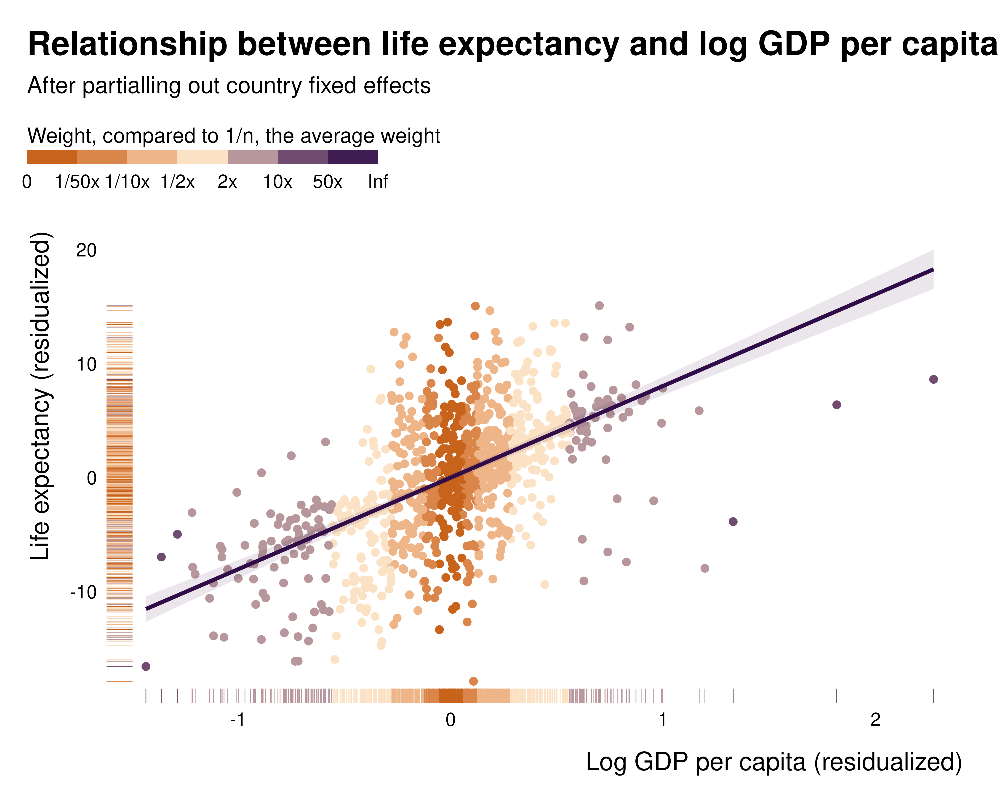
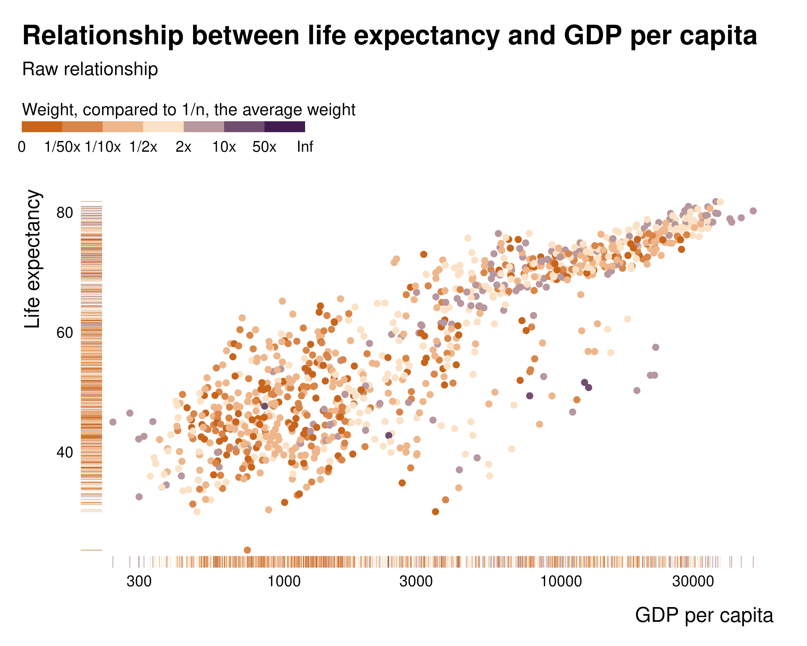

Background on the weights
background.RmdThis document very quickly introduces the maths and theory behind the weights. More detail is available in the associated research paper.
Intuition
These weights represent how much each observation contributes to the identification. They correspond to the leverage of each observation in the bivariate regression of the independent variable on the treatment or main variable of interest, after partialling out the controls.They are equivalent–up to a normalization to one–to the multiple regression weights defined by Aronow and Samii (2016) and previously discussed in Angrist and Pischke (2009). Observations for which the main variable of interest is well explained by controls only contribute little to identification; the controls or fixed effects absorb most of the variation.
A range of existing tools from the statistics literature, such as leverage and Cook’s distance, already measure the influence of individual observations on regression parameters. These measures, however, assess influence on the parameter vector and are not directly suited for applied economics where interest is typically confined to a single parameter: the coefficient of the treatment variable. To get to a more suited measure, the present procedure consists in first applying the Frisch-Waugh-Lovell theorem and then computing leverage for the regression of the residualized outcome on the residualized treatment. The residuals are obtained from regressions on the full set of controls, including fixed effects and other identification-related controls such as control functions. This produces observation-specific weights describing the extent to which each observation contributes to the estimation of the treatment effect.
The weight of each observation is:
where is the variable of interest and the vector of controls and fixed effects. These weights are therefore the normalized squared residuals of the regression of on the full set of controls.
In the package, they are computed using the same estimation procedure
as the one used in the main regression, just replacing the outcome
variable with the dependent variable of interest. The following example
illustrates how the idid_partial_out function works on an
example model describing the relationship between median price and
number of housing sales in Texas:
library(ididvar)
library(ggplot2)
library(dplyr)
library(fixest)
reg_ex_fixest <- ggplot2::txhousing |>
mutate(l_sales = log(sales)) |>
fixest::feols(fml = l_sales ~ median + listings | year + city, vcov = "twoway")
idid_partial_out(reg_ex_fixest, "median") |>
head()
#> [1] 4357.90243 -8317.76671 -8897.22065 1603.32003 308.18621 -99.38339
txhousing |>
feols(fml = median ~ listings | year + city, vcov = "twoway") |>
residuals() |>
head()
#> [1] 4357.90243 -8317.76671 -8897.22065 1603.32003 308.18621 -99.38339Group level weights
One can compute group level weights by summing the weights of observations within that group. This allows for a quick computation and interpretation of weights at higher aggregation levels. These group-level weights correspond to the within-group variance of the conditional treatment status.
In low weight groups, there is only a little amount of variation in the dependent variable to estimate an effect. Considering an extreme case gives a clear intuition: when using group level fixed effects, if there is no variation in for that group, this group does not contribute to the estimation of the parameter for at all. For instance, in the previous example, if all prices are the same in a given city, it will not be possible to estimate how variations in prices are related with variation in sales in that city.
What do they represent, really?
By definition, in the partialled out regression, these weights represent the squared-distance to the center of the distribution of the variable of interest, after partialling out the controls. The following example, describing the relationship between x and y partialled out and the weights illustrates this:

While this pattern clearly appears in the partialled out regression, it is much less visible when plotting the raw relationship, hence the importance of analysing those weights and plotting the partialled out regression:

What the weights are
ididvar computes, for each observation, its contribution
to the estimate of a treatment coefficient.
Standard influence measures are not suited to this. Leverage and Cook’s distance describe the influence of an observation on the entire parameter vector, mixing the treatment with the controls, whereas a causal analysis targets one coefficient. An observation can have high leverage and contribute almost nothing to the treatment effect, and the reverse [@aronow_samii2016, App. B].
The metric implemented here is the leverage of the regression that actually produces the treatment coefficient. By the Frisch-Waugh-Lovell theorem, that coefficient is obtained by regressing the residualized outcome on the residualized treatment, both partialled out on the full control set. That regression has one regressor and no intercept, so the leverage of observation is
and sums to one across observations. The numerator is the multiple regression weight of @aronow_samii2016, so with a single parameter of interest the two coincide up to that normalization. With several parameters of interest the leverage generalizes to and the two objects separate.
The control set is where the package departs from existing implementations. It includes the causal controls: the fixed effects, control functions and first-stage residuals through which an identification strategy operates. Reading causal strategies as forms of controlling makes the same weight computable across designs, so that weights from a fixed effects specification, an IV and an OLS with covariates are all on the same footing and can be compared.
Why they matter, in the simplest possible case
The weights are usually introduced as a concern about heterogeneity: when treatment effects vary, the coefficient is a weighted average of unit-level effects rather than the average treatment effect [@angrist1998; @angrist_krueger1999; @aronow_samii2016; @sloczynski2022]. That framing invites the reading that the problem belongs to observational work, where selection into treatment is the culprit.
It does not. Consider a randomized experiment with two strata of equal size. Treatment is assigned at random within each stratum, so there is no confounding conditional on the stratum, but at different rates: 50% in stratum A and 10% in stratum B. The treatment effect is 1 in A and 4 in B. The stratum also shifts the baseline outcome, so the stratum must be controlled for.
library(dplyr)
set.seed(1)
N <- 10000
data <- tibble(
group = rep(c("A", "B"), each = N/2),
beta = ifelse(group == "A", 1, 4),
baseline = ifelse(group == "A", 0, 3),
treated = rbinom(N, 1, ifelse(group == "A", 0.5, 0.1)),
y_obs = baseline + beta * treated + rnorm(N)
)The average treatment effect is the average of the unit-level effects:
mean(data$beta)
#> [1] 2.5The regression returns something else:
Nothing here can be attributed to identification. Assignment is random within stratum, the stratum is controlled for, and the model matches the data generating process exactly.
Where the discrepancy comes from
With the stratum indicator as the only control, partialling out reduces to demeaning within stratum. Summing the squared residuals by stratum gives each stratum’s share of the identifying variation:
weights <- data |>
group_by(group) |>
summarise(
beta = first(beta),
share_treated = mean(treated),
weight = sum((treated - mean(treated))^2)
)
weights
#> # A tibble: 2 × 4
#> group beta share_treated weight
#> <chr> <dbl> <dbl> <dbl>
#> 1 A 1 0.487 1249.
#> 2 B 4 0.102 456.Stratum B holds half the sample and a quarter of the identifying variation: its imbalance leaves little variation in treatment once the stratum is partialled out. The coefficient is the average of the stratum effects weighted by these quantities,
which reproduces the regression coefficient up to sampling noise. The stratum carrying the larger effect is the one the design mutes. @aronow_samii2016 note this case for block-randomized designs [fn. 15, p. 256], and @sloczynski2022 develops it into diagnostics based on the treated share.
Two remarks
The regression above is not confounded. Conditioning on the stratum eliminates confounding exactly, as intended. What changes is the estimand: the coefficient is a weighted average of stratum-specific effects rather than their simple average, with weights set by the design rather than chosen. Reporting it as an average treatment effect is what fails, not the identification strategy.
Second, the concern above rests entirely on the effects differing
across strata. Setting them equal switches it off: the estimand returns
to the true effect whatever the weights. The weights themselves do not
become equal, and the total identifying variation they represent is
unchanged by the assumption. That total governs the precision of the
estimator rather than its estimand, which is the reason
ididvar reports the effective sample alongside the weights:
normalizing to one preserves the composition of the identifying
variation and discards its amount.